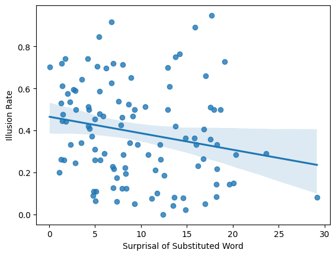
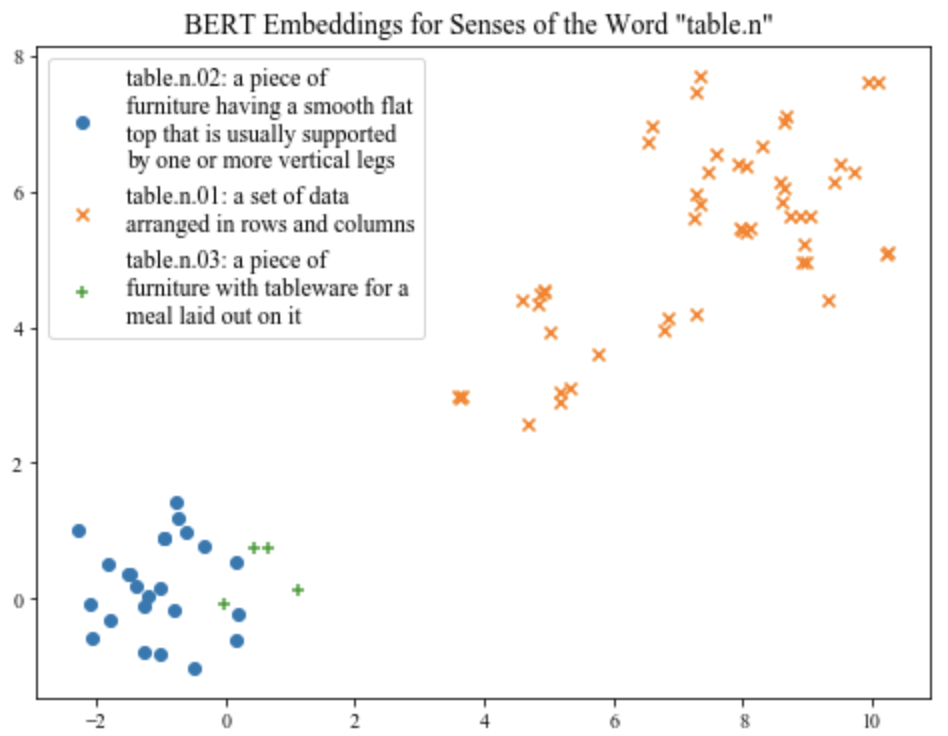
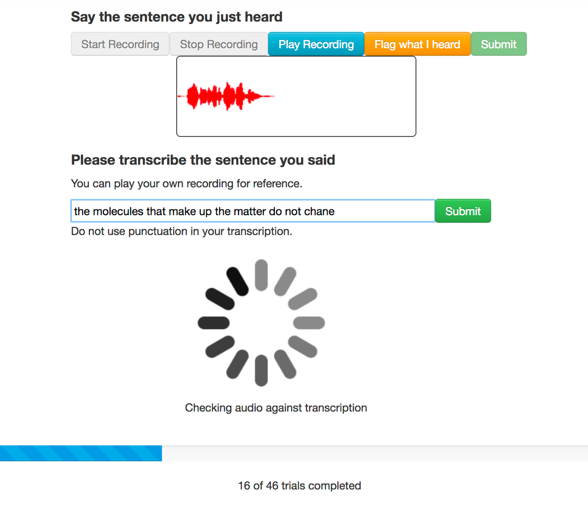

|
Research
In general, I'm excited about various topics at the intersection of language, computation, and cognition.
As far as research goes, I largely focus on computational models of sentence processing and lexical representation, and their ties to memory and attention.
Many linguistic regularities can be picked up by large language models, so I'm interested in using them as tools to operationalize psycholinguistic hypotheses.
Recently, I'm becoming curious about how insights from cognitive neuroscience can be applied to biologically and psychologically plausible models of language use.
Although I'd consider myself a cognitive scientist first, I'm also interested in bringing insights from psycholinguistics to the development and evaluation of NLP systems, and am also passionate about using my experience in software development to advocate for reproducible behavioral science.
|
Publications
|

|
How far does probability take us when measuring psycholinguistic fit? Evidence from substitution illusions and speeded cloze data
Sathvik Nair,
Shohini Bhattasali,
Philip Resnik,
Colin Phillips
Poster Presentation at the 36th Annual Conference on Human Sentence Processing, 2022
Abstract
When asked How many animals of each kind did Moses take on the ark?, humans often respond with two instead of detecting issues with the question.
This effect is known as a substitution illusion (canonically a Moses illusion, but we refer to them this way to emphasize how they can apply in various contexts).
We used measures from NLP techniques on experimental data collected by Muller (2022) to address whether people's selectivity to the illusion is better explained by semantic similarity of the correct word and substituted word (distributional vector-space representations), or the substituted word's relationship to the context(masked language modeling).
On a separate speeded cloze task (Staub et al, 2015), we found that language model probability corresponded strongly with cloze probability, but not with reaction time, which is seen as a stronger measure of lexical predictability in context.
This work reveals some limitations of applying language models to psycholinguistic data.
|
|

|
Contextualized Word Embeddings Capture Human-Like Relations Between English Word Senses
Sathvik Nair,
Mahesh Srinivasan,
Stephan Meylan
Oral Presentation for Cognitive Aspects of the Lexicon workshop(CogALex VI) at International Conference on Computational Linguistics (COLING), 2020
Undergraduate Honors Thesis, advised by Dr. Meylan, Prof. Srinivasan, and Prof. Steven Piantadosi, received the Glushko Prize for Outstanding Undergraduate Research in Cognitive Sciences.
Paper |
Thesis |
Code and Data
We investigated whether recent advances in NLP (specifically the Transformer-based neural network model BERT), are able to capture human-like distinctions between
meanings of the same word, such as polysemy and homonymy. We collected human judgements of the relatedness of selected WordNet senses for 32 English words
from a two-dimensional spatial arrangement task, and compare them with relatedness according to BERT vectors for these corresponding senses in the SemCor corpus.
We demonstrated participants’ judgments of the relatedness between senses are correlated with distances between senses in the BERT embedding space, and that BERT encodes
homonymous sense relations closer to human judgements than polysemous ones.
|
|

|
Evaluating Models of Robust Word Recognition with Serial Reproduction.
Stephan Meylan,
Sathvik Nair,
Tom Griffiths
Published in May 2021 issue of Cognition journal
Journal Article |
Preprint (full text)
We compared how several probabilistic generative language models, such as n-grams, probabilistic context free grammars (PCFGs), and neural networks,
capture human linguistic expectations in a web-based serial reproduction task, in which in which participants try to repeat sentences said by other participants,
similar to a game of "Telephone." We found that models that make use of preceding context, especially those with abstract representations of linguistic structure, best predict changes participants
made when trying to reproduce utterances in the experiment. I contributed to designing and implementing parts of the experimental interface,
extracting probabilities under PCFGs, modeling which words in utterances were most likely to change under the models, and revising the final paper.
|
Collaborators, Mentors, Friends, and other Co-Conspirators
Research is never done in a vacuum, and publications don't reflect everyone who's intellectually influenced me. Here are some of those people.
- UMD Cohort: Sebastián Mancha, Utku Türk, Sarah Boukendour,
Cassandra Caragine, Lydia Quevedo, Allison Dods,
Malhaar Shah, Sathvik Nair (SUS CLAMS for short)
- Labmates: Rupak Sarkar, Alexander Hoyle, Pranav Goel, London Dixon,
Katherine Howitt, Rosa Lee, Masato Nakamura, Xinchi Yu,
Joselyn Rodriguez, Nika Jurov, Craig Thorburn, Neha Srikanth
- Collaborators and Mentors: Jess Mankewitz, Dr. Sammy Floyd, Dr. Mika Braginsky, Prof. Naomi Feldman, Prof. Ellen Lau,
Prof. Alexander Williams, Prof. Shohini Bhattasali, Dr. Stephan Meylan, Dr. Ruthe Foushee
|
Miscellaneous
Other projects (not just academic) and information.
- childes-db - I helped update & refactor the implementation of a relational database interface to CHILDES, a collection of multilingual child language corpora, so it can be easily accessed in Python and R.
- GPT-3: An AI Breakthrough, but not Coming for Your Job
– Article describing GPT-3, reactions from the press and experts, and research-backed opinions on the technology's limitations for Skynet Today (AI news publication). Coauthored with Daniel Bashir
- How Biases in Language get Perpetuated by Technology
– Towards Data Science article on personal project investigating gender, racial, and religious bias through analogy evaluation with static word embeddings (GloVe)
- Workshop on NLP/ML– given at the Spectra 3.0 hackathon.
Presented overview of the field and sentiment classification demo on tweets related to mental health.
- Letters for Black Lives- I was involved with writing & curating resources for the South Asian community on anti-Blackness, including Hindi translation.
- Here are some organizations whose work I care about: DMV Mutual Aid, Kalama Mutual Aid, Queer in AI, Bay Area Solidarity Summer, Sogorea Te' Land Trust
- In my spare time, I enjoy playing violin & South Asian percussion, cooking, going on runs and hikes, and most recently, exploring the East Coast.
|
Website Template
|